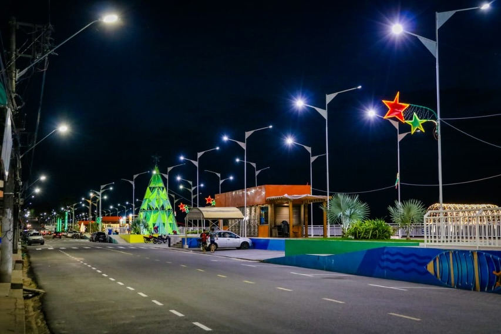
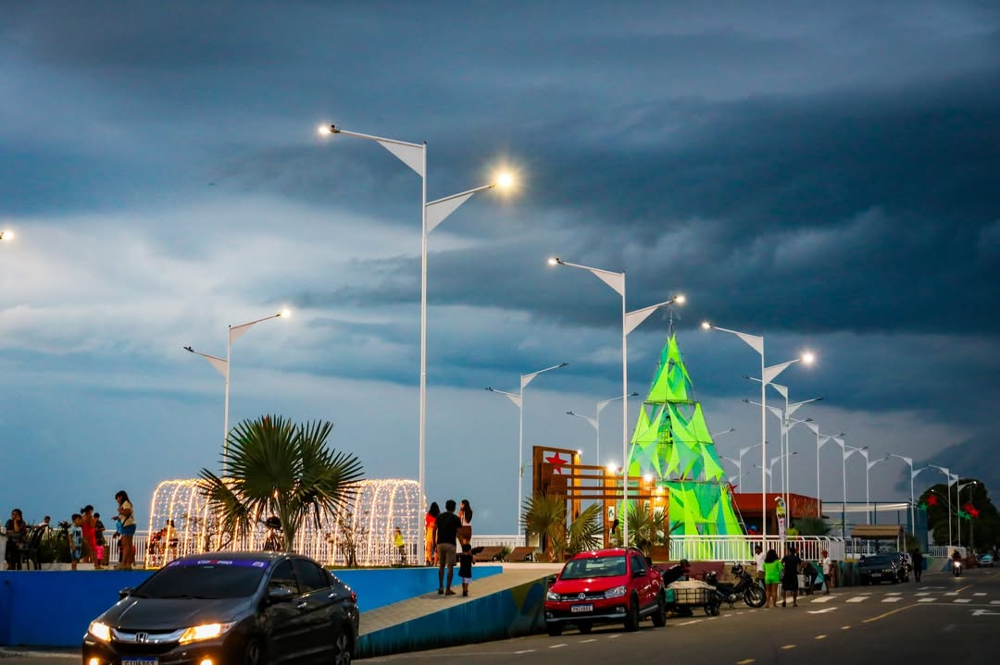
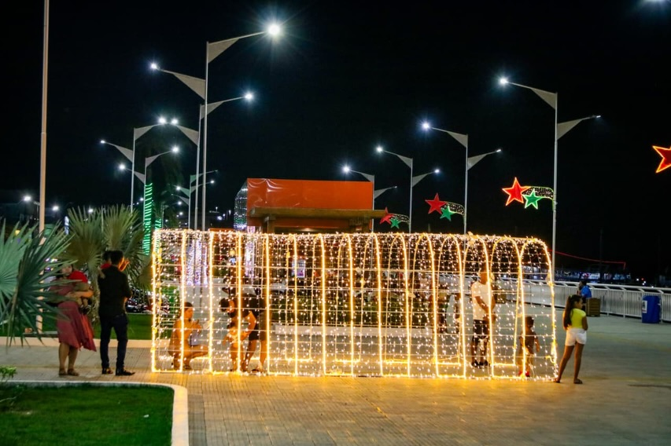
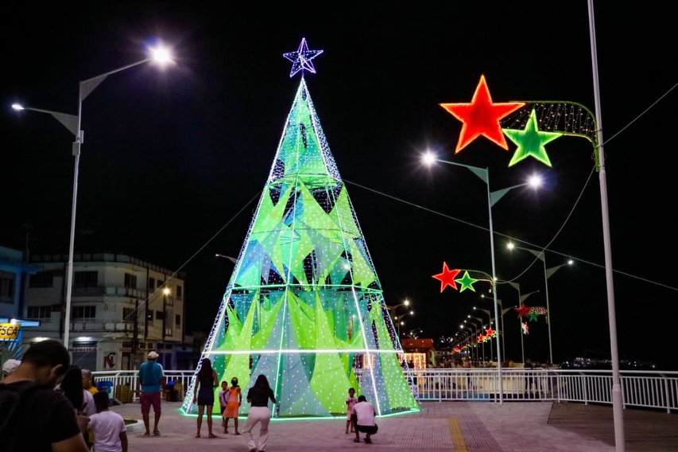
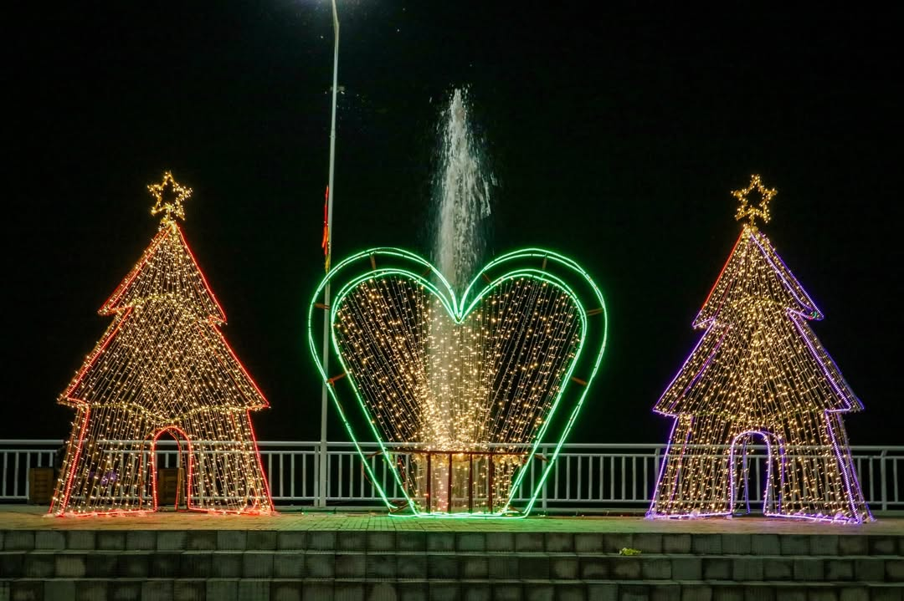
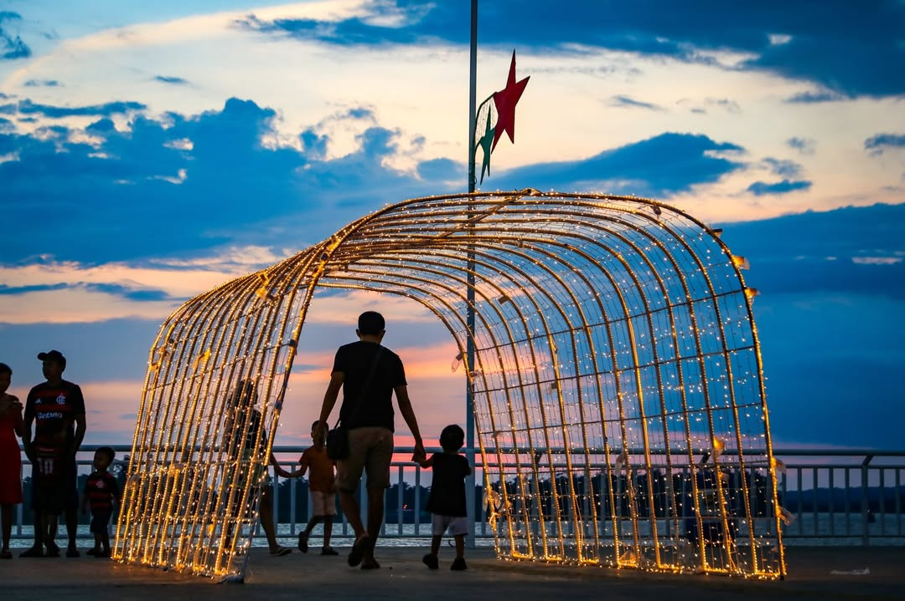
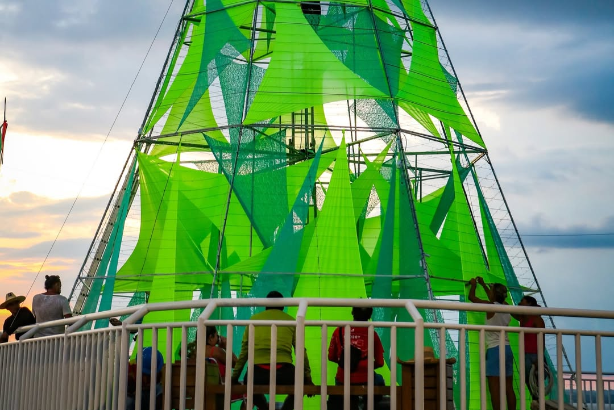
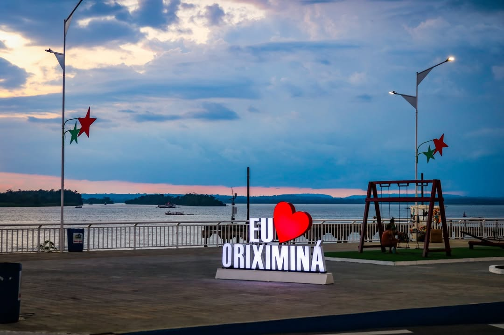

A Orla da Cidade é um dos principais espaços de lazer e convivência de Oriximiná, ideal para caminhadas, contemplação do rio Trombetas e momentos de descanso, sendo um ambiente frequentado ao longo de todo o dia por moradores e visitantes.
Galeria de Fotos








Serviços nas proximidades
Alimentação
Hospedagem
Orientações ao visitante
Respeite os espaços públicos, evite o descarte irregular de resíduos e aproveite a Orla da Cidade com segurança, contribuindo para a preservação e o bom uso do ambiente.